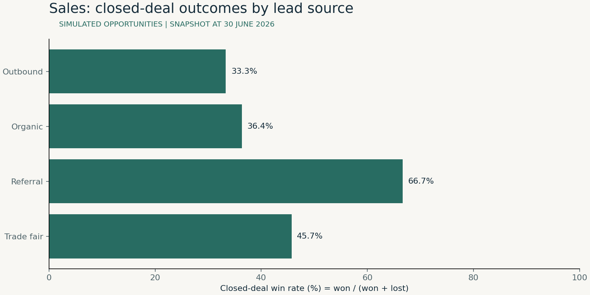

PROYECTO 03
Oportunidades de venta
y rendimiento comercial.
Análisis B2B, previsión comercial e indicadores para apoyar decisiones.
Contexto del caso
Caso práctico de iniciativa propia con 220 oportunidades simuladas creadas entre enero y junio de 2026, evaluadas al 30 de junio de 2026. Aster Distribution Europe, sus clientes y las operaciones son ficticios. Las previsiones utilizan probabilidades asumidas y las recomendaciones no representan mejoras implementadas.
01 — El reto
Distinguir las ventas cerradas del negocio potencial, comprender dónde se registran pérdidas y priorizar oportunidades. Una cartera grande no garantiza el cumplimiento de los objetivos futuros.
02 — Enfoque
Generé datos reproducibles con una semilla fija y supuestos documentados. Comprobé identificadores, fechas, cierres, motivos de pérdida y la conciliación de oportunidades abiertas, ganadas y perdidas. Los registros muestran la etapa actual o final, no un historial de transiciones; por tanto, las distribuciones no se presentan como tasas históricas de conversión entre etapas.
03 — Herramientas y métodos
Google Sheets: libro de seis hojas con fórmulas COUNTIFS, SUMIFS, promedios, VLOOKUP y lógica IF, controles de entrada, formato condicional y gráficos editables. JavaScript apoya la simulación reproducible y las comprobaciones de conciliación. No se utilizaron tablas dinámicas ni un modelo predictivo.
La previsión pondera el importe abierto por una probabilidad explícita: contacto inicial, 10 %; oportunidad cualificada, 25 %; propuesta, 50 %; negociación, 75 %. Excluye operaciones ganadas y perdidas.
04 — Análisis
- 220 oportunidades: 64 ganadas, 83 perdidas y 73 abiertas.
- Importe ganado: 746.250 €; cartera abierta: 1.212.450 €. El importe ganado es un indicador comercial, no ingresos contables, cobros ni beneficio verificados.
- Tasa de éxito sobre operaciones cerradas: 43,5 % (64/147). Importe medio ganado: 11.660 €. Ciclo medio de las operaciones cerradas: 53,7 días.
- Cartera abierta ponderada: 500.057,50 €, incluidas fechas de cierre vencidas. Previsión julio–septiembre: 349.052,50 €, excluidos los cierres previstos vencidos.
- La previsión equivale al 174,5 % de un objetivo trimestral propuesto de 200.000 €. Ni el objetivo ni las probabilidades están calibrados con resultados reales; no se ha validado la precisión fuera de la muestra.
05 — Principales hallazgos
- Las referencias tienen una tasa de éxito sobre cierres del 66,7 % (20/30), frente al 33,3 % de la prospección saliente (20/60). Generan 239.800 € ganados, frente a 219.000 €. No se demuestra causalidad del canal.
- Los distribuidores regionales tienen el mayor importe medio por oportunidad: 25.901 €. Su ciclo medio cerrado es de 79,6 días, frente a 35,5 para minoristas independientes.
- 35 de las 83 pérdidas (42,2 %) se registraron en la etapa de propuesta, por 529.300 €. No es una tasa histórica de conversión de propuestas.
- 21 oportunidades abiertas, por 299.000 €, tienen cierres previstos vencidos. Otras 27 llevan más de 21 días sin actividad; ambos grupos pueden solaparse.
06 — Recomendaciones
- Revisar responsables, próximos pasos y fechas de cierre de las oportunidades vencidas en un ciclo semanal.
- Investigar cualificación, precios y motivos de pérdida antes de modificar la inversión comercial; registrar un motivo estándar para cada nueva pérdida durante un piloto de 30 días.
- Priorizar por importe, etapa y actividad; mantener un responsable y una próxima acción fechada para cada oportunidad revisada.
- Separar la planificación de distribuidores por sus ciclos más largos y contrastar previsiones con resultados posteriores antes de recalibrar probabilidades.
Los beneficios son potenciales: no se han medido aumentos de ventas, ahorros ni mejoras implementadas.
07 — Aprendizajes
El caso reforzó la importancia de definir denominadores claros, separar ventas cerradas, cartera abierta y previsiones ponderadas, y documentar los supuestos y límites de los datos.
MATERIALES DEL PROYECTO
Examinar el análisis comercial
Libro original con registros de oportunidades simuladas, indicadores y previsión ponderada. La vista previa utiliza los valores verificados por canal. El gráfico mensual del archivo original tiene un rango de fechas incompleto y requiere corrección; la exportación se conserva sin modificar.
Documento original en inglés. La vista previa conserva el idioma del material de origen.

